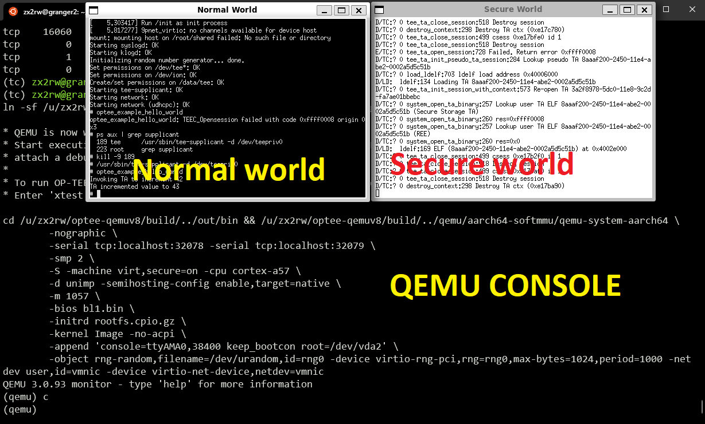
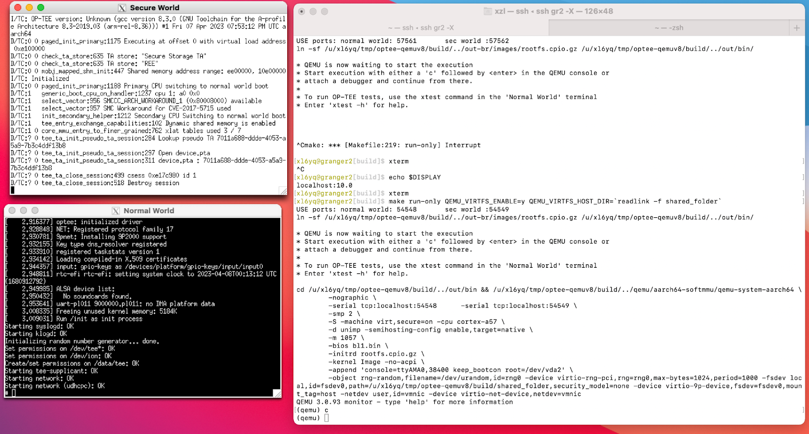

Quickstart: OPTEE
This project can be completed on:
- (recommended): CS servers running QEMU emulation; or
- (adventurous): your own Linux/Windows machine running QEMU emulation; or
- (adventurous): real rpi3 hardware.
This article describes the recommended route: use a personal machine connected to course servers; build everything on servers; the servers run QEMU which emulates the TrustZone hardware. For adv routes, see docs/archived/ and here.
NOTE: QEMU from p1 cannot be used.
Source code overview
OPTEE is a complex project with a myriad of components, including QEMU, a normal world daemon, trustlets (TAs), etc. The sources of all these components are organized in a directory with the following structure.
($optee ROOT)
├── build (this is where we execute the build command)
├── shared_folder/ (will be shared with the QEMU)
├── (other artifacts)
├── buildroot
├── edk2 (a firmware SDK)
├── linux
├── mbedtls
├── optee_benchmark
├── optee_client
├── optee_examples
├── optee_os
├── optee_test
├── out
├── out-br (the build outcome)
├── qemu (a qemu version with TrustZone support)
├── soc_term
├── toolchains
└── trusted-firmware-a
The build process is complex. It is managed by numerous Makefiles in a hierarchy; it also builds for various Arm boards and QEMU (called "targets''). To automate the build process, there is a dedicated component called build (see above), which has its own git repository.
Setup steps
Step 1: Prep personal machine
Your local machine may run Windows, Mac, or Linux.
"owner" == you have a local machine with admin access
"unsupported" == it may work; but the course staff cannot provide support
Install Software
- Win owner: Install WSL2 instructions; the Linux version for WSL can be Ubuntu >= 20.04. Also see instructions. Warning: you must use WSL terminals, not "cmd" or "Powershell" as you have have been doing before.
- Mac owner: Install & configure X server. instructions
- Linux owner: make sure you have a local X desktop.
Step 2: build OP-TEE for QEMU
NOTE: QEMU from p1 cannot be used.
We will pull code to ~/optee-qemuv8, so make sure there is no pre-existing directory with the same name.
- Grab the source code. From granger1 or granger2, run
/cs4414-shared/optee-qemuv8/student-pull-dir.sh
Check: If everything works fine, it will create ~/optee-qemuv8 with the following contents.
Explanation: most of the software stack (toolchains, secure firmware, the Linux kernel...) are prebuilt and placed under /cs4414-shared/optee-qemuv8 which you just use as symbolic links. You will modify your own copy of OPTEE and the OS root filesystem (rootfs), via a framework called buildroot.
- Load build commands.
cd ~/optee-qemuv8/
source env.sh
Explanation: env.sh conveniently defines makefile commands as shell functions, which you can invoke from command line.
- Build OPTEE for QEMU ARMv8:
p3-buildroot
Explanation: under the hood (see env.sh), the above command runs:
make buildroot QEMU_VIRTFS_ENABLE=y CFG_SECURE_DATA_PATH=y CFG_TEE_RAM_VA_SIZE=0x00300000 -j`nproc`
QEMU_VIRTFS_ENABLE allows QEMU and the host (e.g. granger1) to share files; CFG_SECURE_DATA_PATH builds in the support for data copy between two worlds; CFG_TEE_RAM_VA_SIZE sets the virtual address range for TEE; -jnproc asks to use all cores for making. buildroot is a Makefile target for building the whole root filesystem (rootfs).
If you want to clean up existing build, do p3-buildroot-clean
- Verify build artifacts. Check: if everything builds ok, the rootfs image (rootfs.cpio.gz) must exists, and with a recent timestamp:
# cd ~/optee-qemuv8
$ ls -lh out-br/images/rootfs.cpio.gz
-rw-r--r-- 1 cs6456ta cs6456ta 7.5M Jan 21 12:59 out-br/images/rootfs.cpio.gz
Step 3: run OPTEE
p3-run
Explanation: it will invoke the following command:
make run-only QEMU_VIRTFS_ENABLE=y QEMU_VIRTFS_HOST_DIR=`readlink -f shared_folder`
QEMU_VIRTFS_HOST_DIR means the emulated OS and the host (e.g. granger1/2) will share a directory. This eases exchanging files between the emulated OS and host.
On the server, you should see QEMU run without errors. On your local machine, you should see two terminal windows pop up. We will refer to them as "normal world console" and "secure world console".
Windows (WSL2):

Mac:

Start the emulation: typing c in the QEMU console (see the screenshot above, near the bottom).
From the normal world console, login Linux. Username "root", no password.
In case of errors, see troubleshooting.
If you cannot get local X server to work
If in a pinch, you may run nc on server. See quickstart-nc.md. Warning: much more rudimentary than X servers.
Run sample apps
Once the above is done, verify that OPTEE's normal-world daemon (tee_supplicant) is already started automatically as a service. Check:
# In the normal world console:
$ ps aux|grep supplicant
190 tee /usr/sbin/tee-supplicant -d /dev/teepriv0
Next, try OPTEE's test suite (xtest), which should have been built in the rootfs image (rootfs.cpio.gz):
# In the normal world console:
$ which xtest
/usr/bin/xtest
$ xtest
(output...)
For more options for xtest, see its reference
Now, try examples for OPTEE, e.g.
# In the normal world console:
$ optee_example_hello_world
Invoking TA to increment 42
TA incremented value to 43
Reference: Official build instructions
Modify & run sample apps
Next, test the development workflow: modify an app source, rebuild rootfs, & run the whole system with our modification.
We will leverage an existing OPTEE example program ("helloworld"): modify its sources, rebuild the entire rootfs, and relaunch QEMU. Here's its code:
$ tree ./optee_examples/hello_world/
hello_world/
├── Android.mk
├── CMakeLists.txt
├── host (the normal world)
│ ├── main.c
│ └── Makefile
├── Makefile
└── ta (the secure world)
├── Android.mk
├── hello_world_ta.c
├── include
│ └── hello_world_ta.h
├── Makefile
├── sub.mk
└── user_ta_header_defines.h
3 directories, 11 files
1. Change the CA (the normal world):
Make trivial changes to the app source: ./optee_examples/hello_world/host/main.c
@@ -82,7 +82,7 @@ int main(void)
* TA_HELLO_WORLD_CMD_INC_VALUE is the actual function in the TA to be
* called.
*/
- printf("Invoking TA to increment %d\n", op.params[0].value.a);
+ printf("hello! ... Invoking TA to increment %d\n", op.params[0].value.a);
+
Then rebuild helloworld (included in rootfs):
p3-buildroot
Check the output: ./out-br/target/usr/bin/optee_example_hello_world. Does the file have a recent timestamp?
Restart QEMU and invoke the CA from within QEMU, see if our modification is effective:
# (in the normal world console)
$ optee_example_hello_world
hello! ... Invoking TA to increment 42
TA incremented value to 43
2. Change the TA (the secure world)
Source location: ./optee_examples/hello_world/ta/hello_world_ta.c
Do some trivial changes:
@@ -108,7 +108,8 @@ static TEE_Result inc_value(uint32_t param_types,
return TEE_ERROR_BAD_PARAMETERS;
IMSG("Got value: %u from NW", params[0].value.a);
- params[0].value.a++;
+ params[0].value.a+=2;
IMSG("Increase value to: %u", params[0].value.a);
Build:
p3-buildroot
Check the build outcome:
# on dev machine
$ ls -lh out-br/target/lib/optee_armtz/8aaaf200-2450-11e4-abe2-0002a5d5c51b.ta
-r--r--r-- 1 xzl xzl 55K Jul 10 09:56 out-br/target/lib/optee_armtz/8aaaf200-2450-11e4-abe2-0002a5d5c51b.ta
$ md5sum out-br/target/lib/optee_armtz/8aaaf200-2450-11e4-abe2-0002a5d5c51b.ta
669e219e7381c842d80f3ba68db9368f out-br/target/lib/optee_armtz/8aaaf200-2450-11e4-abe2-0002a5d5c51b.ta
Why the magical filename? This is because each TA is named after a unique UUID. In this example, it is defined in hello_world_ta.h. The build script will pick the UUID up and name the output binary after it.
Restart QEMU, and check if the newly build TA is included into our rootfs:
# (In the normal world console):
$ md5sum /lib/optee_armtz/8aaaf200-2450-11e4-abe2-0002a5d5c51b.ta
669e219e7381c842d80f3ba68db9368f
The md5sum (669e2...) matches what we saw above.
Now run helloworld again:
# (in the normal world console)
$ optee_example_hello_world
hello! ... Invoking TA to increment 42
TA incremented value to 44
The value is incremented by 2 -- our modification to TA works!
Pro tips: share files with QEMU, no reboot needed
With the above method, you will soon find it tedious to restart QEMU every time we change TA/CA sources. The solution is to share the TA/CA build outcome via a folder shared with the QEMU guest.
No extra step is needed. After QEMU is launched, Linux mounts the shared folder in QEMU guest system automatically. To verify:
# in normal world console
$ mount -a
...
host on /root/shared type 9p (rw,sync,dirsync,relatime,access-client,trans=virtio)
Explanation: automatic mount is done by the following line in /etc/fstab
# in normal world console
$ cat /etc/fstab | tail -n 1
host /root/shared 9p trans=virtio 0 0
1. To rebuild a CA: Every time we rebuild a CA (see the command above make buildroot...), copy its binary to the shared directory:
$ cp ./out-br/target/usr/bin/optee_example_hello_world build/shared_folder/
2. To rebuilt a TA: If we rebuild a TA, first copy TAs to the shared directory (similar to above); then in the normal world console, copy the TAs to the guest's /lib where OPTEE's daemon will look for TAs:
# (in the normal world console)
$ cd shared && cp *.ta /lib/optee_armtz/
Consider writing a script to automate the above workflow.